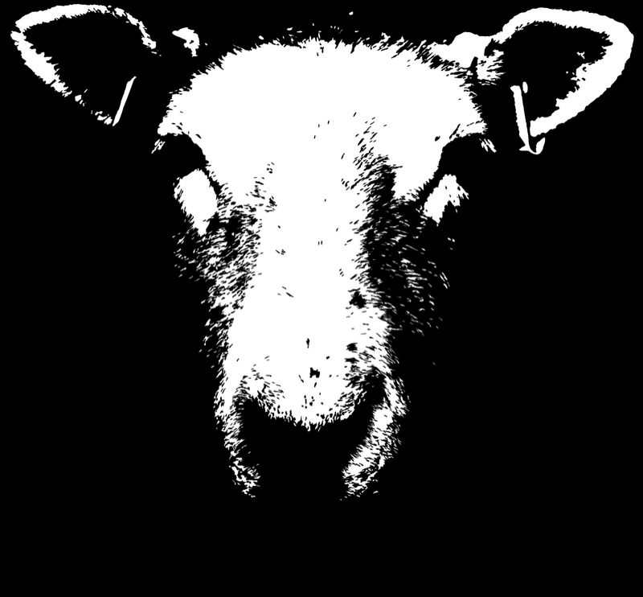

Michael Cook aka EXHIBION is an active Visual artist, circulating in the Bristol arts scene.
Nature has been a readily available source of inspiration. Work begins with a photograph, often of an animal, which is broken down into its simplest form and displayed in black and white. Works have been compared to Rorschach tests; some people may not see past the simplistic facade, whilst others are greeted with a multitude of intriguing sights and emotions whilst viewing the canvas.

